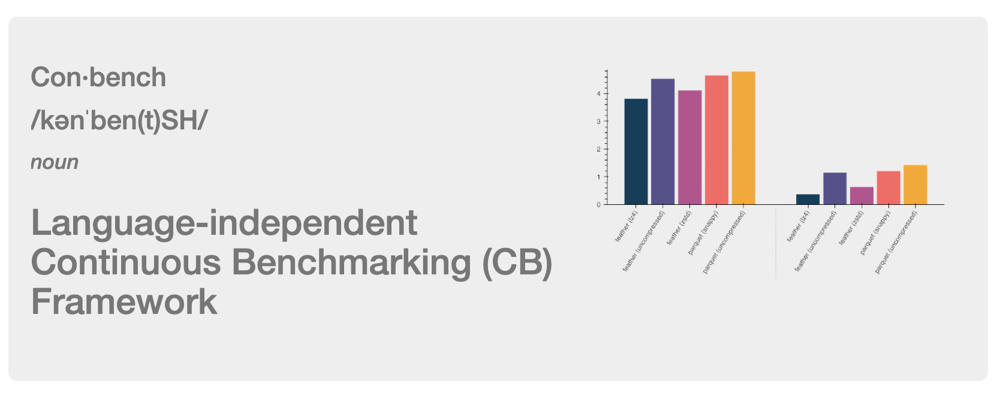
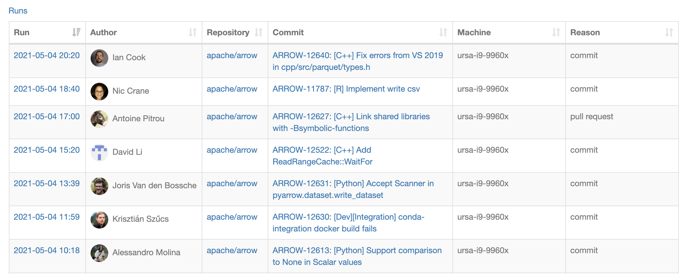
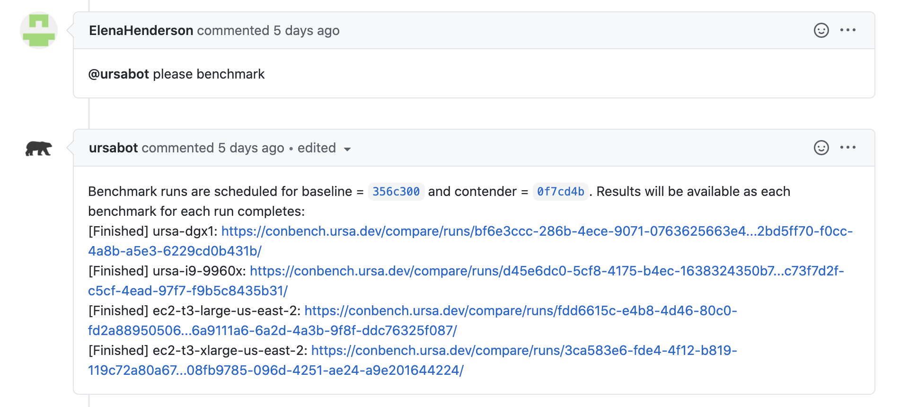
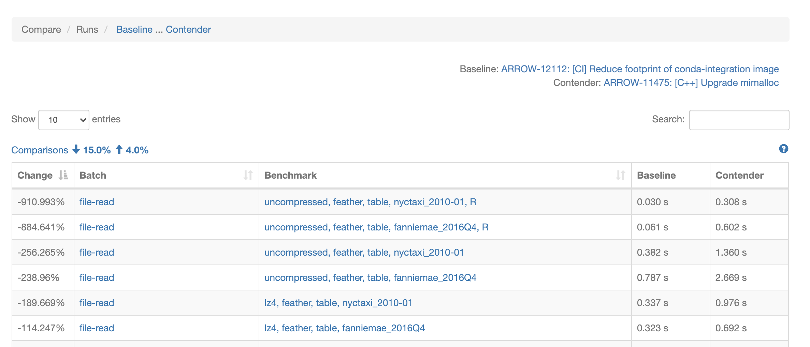
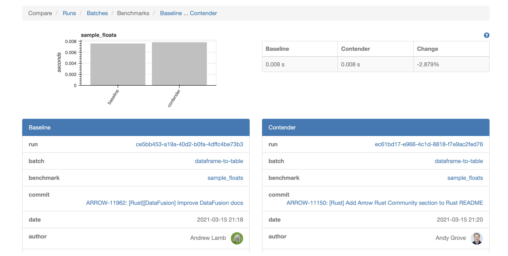
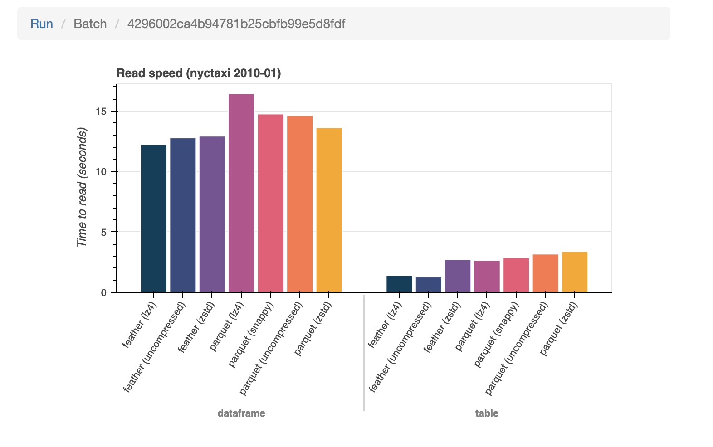
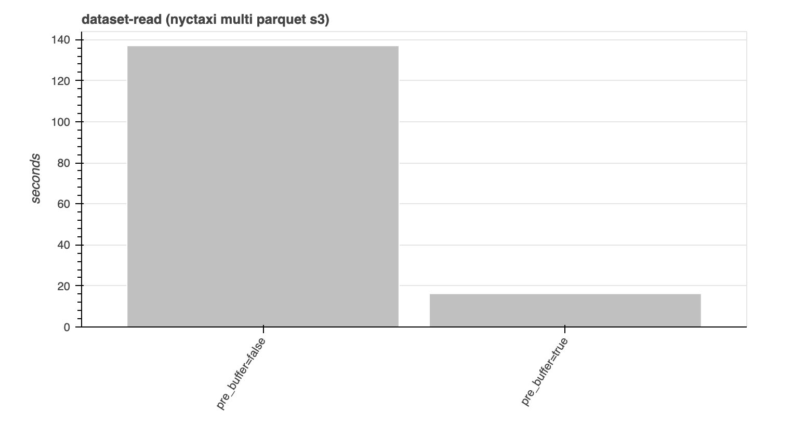

Join us in welcoming a new tool to the Apache Arrow project: Conbench.
Conbench is a language independent, continuous benchmarking framework, built specifically with the needs of a cross-language, platform-independent, high-performance project like Arrow in mind.
Conbench allows you to write benchmarks in any language, publish the results as JSON via an API, and persist them for comparison while iterating on performance improvements or to guard against regressions.
In addition to benchmark results, Conbench will also collect machine information relevant to hardware specific optimizations (architecture, CPU info, L1d/L1i/L2/L3 cache info, etc), and any applicable context, configurable per project (like git revision, compiler flags, benchmark language version, etc).
Conbench for Arrow
Arrow is a fast moving project, with libraries in 10+ languages (C, C++, C#, Go, Java, JavaScript, Julia, MATLAB, Python, R, Ruby, Rust), and support for a variety of platforms (Amazon Linux, CentOS, Debian, macOS, Red Hat Enterprise Linux, Ubuntu, Windows, etc).
- Arrow 1.0 (July 2020): 810 resolved issues from 100 distinct contributors
- Arrow 2.0 (October 2020): 511 resolved issues from 81 distinct contributors
- Arrow 3.0 (January 2021): 666 resolved issues from 106 distinct contributors
- Arrow 4.0 (April 2021): 711 resolved issues from 114 distinct contributors
Making sure each of these ecosystems lives up to the promise of high-performance analytics is where benchmarking becomes increasingly important.
There are over 2000 C++ micro benchmarks in the Arrow git repository, and there are additional Python and R macro benchmarks for Arrow in the ursacomputing/benchmarks and ursacomputing/arrowbench repositories.
On each commit to the main Arrow branch, the C++, Python, and R benchmarks are run on a variety of physical benchmarking machines & EC2 instances of different sizes, and the results are published to Conbench.
The 500 most recent benchmark runs can be seen by visiting: https://conbench.ursa.dev/.

Pull Request Integration
Additionally, benchmarks can also be run on an Arrow pull request by adding a GitHub comment with the text: @ursabot please benchmark. A baseline benchmarking run against the pull request’s head with also be scheduled, and Conbench comparison links will be posted as a follow-up comment. The C++ benchmarks take about 45 minutes to execute, and the R and Python benchmarks take an additional 30 minutes, but results will immediately start showing up in those comparison links, as each individual benchmark completes.

You can also filter the pull request benchmarks runs by filter name, language, or specific command. A GitHub comment with text @ursabot benchmark help will follow-up with a list of available ursabot benchmark commands.
@ursabot benchmark help
@ursabot please benchmark
@ursabot please benchmark lang=Python
@ursabot please benchmark lang=C++
@ursabot please benchmark lang=R
@ursabot please benchmark name=file-write
@ursabot please benchmark name=file-write lang=Python
@ursabot please benchmark name=file-.*
@ursabot please benchmark command=cpp-micro --suite-filter=arrow-compute-vector-selection-benchmark --benchmark-filter=TakeStringRandomIndicesWithNulls/262144/2 --iterations=3 --show-output=true
Comparison View
On the comparison view, a negative percent changed always indicates a potential regression. This is true for both units where a higher value is better (like the number of bytes processed per second), and for units where a lower number is better (execution time). That said, a regression may not be statistically relevant — instead consider looking only at regressions with a threshold greater than 5% or more. Reducing benchmark volatility and alerting on actual regressions is next on our roadmap.

A note about terminology: A “run” is a set of batches, and a “batch” is a set of benchmark results. For example, all of these Python “file-read” benchmarks are in one batch, and the R “file-read” benchmarks are in another batch, but both sets are part of the same run.
From the run comparison view, clicking on a batch link will filter the comparison table to just the results from a particular batch. Clicking on a benchmark link, will display the baseline and contender details side by side for a more detailed comparison of the benchmark results, commit information, project context, and machine information.
Contender vs. Baseline View

From the contender vs baseline view, you can navigate to the entire run or batch of benchmark results for either the contender or baseline. When in batch mode, Conbench will provide some rudimentary graphs of the various batch cases. More improvements to these graphs, and time series plots of the benchmarks results over time are on the roadmap for future Conbench iterations.

Success Stories
It’s early days for the Arrow/Conbench integration, but already there are success stories.
Conbench primarily serves as continuous benchmarking platform, but it’s also useful for uncovering regressions in functionality, as the macro benchmarks also act as integration tests. Most notably, the R dataframe-to table benchmarks uncovered a bug when run against a variety of source types, and the Python dataset-read benchmarks uncovered a segfault on a work in progress pull request, allowing the author to quickly address it before it was merged to the main Arrow branch.
Performance wise, those same R benchmarks were also used to uncover slowdowns in a large work in progress, which, once addressed, provided the prerequisite confidence needed to merge the new & improved code. Similarly, the Python wide-dataframe benchmark found a regression when benchmarking the Arrow 3.0 and 4.0 wheels against each other.
Also fun was using Conbench and the Python benchmarks to visualize the improvements of a new pre_buffer toggle that was added in Arrow 4.0, which is useful for high-latency filesystems like S3 and takes advantage of the structure of Parquet files. Instead of making a separate request to S3 for every row group and column, pre-buffering combines reads of “adjacent” data into a single request, then makes requests in parallel behind the scenes. This allows it to take advantage of parallelism, while not flooding S3 with small requests.
Pre-buffer on vs. off
Pre-buffer example
paths = [
"ursa-labs-taxi-data/2009/01/data.parquet",
"ursa-labs-taxi-data/2009/02/data.parquet",
"ursa-labs-taxi-data/2009/03/data.parquet",
"ursa-labs-taxi-data/2009/04/data.parquet",
]
dataset = pyarrow.dataset.FileSystemDataset.from_paths(
paths,
schema=schema,
format=pyarrow.dataset.ParquetFileFormat(pre_buffer=True),
filesystem=pyarrow.fs.S3FileSystem(region="us-east-2"),
)
table = dataset.to_table()
Happy benchmarking!
All four GitHub repositories mentioned are open source, and contributions are welcome.
- Conbench: https://github.com/ursacomputing/conbench
- Arrow R benchmarks: https://github.com/ursacomputing/arrowbench
- Arrow Python benchmarks: https://github.com/ursacomputing/benchmarks
- Arrow & C++ benchmarks: https://github.com/apache/arrow/
May your best benchmark results today, be your worst benchmark results tomorrow.
— fake benchmarking proverb 🙂